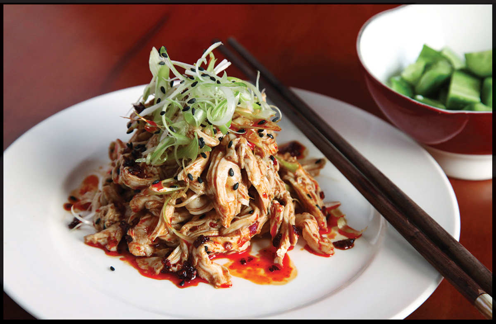

BANG BANG CHICKEN
If I’m to trust the results of a Google search, when most folks hear the phrase “bang bang chicken,” they think of a Cheesecake Factory concoction with fried chicken and shrimp, rice, and a generically pan-Asian creamy coconut-chile-soy-peanut-lime sauce, which, while possibly delicious, is similar to the original Sichuan bang bang chicken only in that they both contain chicken. I’m familiar with this strategy of ethnic-sounding-food-words co-optation. I once worked for a similar chain restaurant where we served seared tuna with a “ponzu dipping sauce” made with sesame oil, soy sauce, and ginger, a far cry from true ponzu made with citrus juice and dashi. I lasted only a few months in that job.
True bang bang ji si gets its name from the sound that a mallet makes when beating the tough chicken breasts of yesteryear into tender submission before being dressed in a sauce known as “mysterious flavor” in Sichuan cuisine, as it combines a wide variety of stimulating flavors: numbing and citrusy Sichuan peppercorns, pungent garlic, toasty sesame paste, sweet sugar, sharp and sweet Chinkiang vinegar, and hot chile oil.
I’ve been playing around a lot with the method I use to make this classic sauce. My current favorite method is to break out the mortar and pestle, which helps bring out better flavor from all the aromatics as well as combining them into a neatly emulsified sauce. I start by grinding Sichuan peppercorns, raw garlic, sesame seeds, and a touch of sugar into a paste before adding the liquid ingredients and grinding them into a stable emulsion. If I recently poached the chicken, adding some of its strained poaching liquid to the dressing thins it out to a nice saucy consistency.
This same sauce is great on any cold poached meat, on hot or chilled noodles or tofu, or on cool crunchy vegetables like cucumbers and cabbage.
As for the chicken, luckily, our modern chickens don’t need the titular bang-bang treatment. All you need to do is remove the bones, then either slice the chicken (with the skin on!) or shred it, toss or drizzle it with the dressing, garnish with scallions and sesame seeds, and you’ve got yourself the bangin’est unbanged bang bang chicken around. The sauce does so much of the lifting that even store-bought rotisserie chicken will shine here.

|
Yield Serves 3 to 4 |
Active Time 20 minutes, plus time to poach the chicken Total Time 20 minutes, plus time to poach the chicken |
You can use the Sichuan Málà Chile Oil recipe on here for this or use your favorite store-bought chile oil. This salad can be made with chicken poached according to the directions on here, with store-bought rotisserie chicken, or with any leftover chicken meat. If you cooked the chicken sous-vide, use some of the liquid from the sous-vide bag in place of the poaching liquid in step 2. If using leftover chicken, you can thin the sauce with homemade or store-bought low-sodium chicken stock or water instead of poaching liquid in step 2.
The Mysterious Flavor Sauce can be scaled to a larger quantity and saved in the fridge for several weeks. Use it on hot or chilled noodles or tofu, boiled wontons or dumplings, fresh crunchy vegetables, or cold poultry or meats. It’s especially good on leftover roast turkey the day after Thanksgiving.
INGREDIENTS
For the Mysterious Flavor Sauce:
2 teaspoons (4 g) toasted Sichuan peppercorns
1 tablespoon (12 g) sugar
1 tablespoon (8 g) minced garlic (about 3 medium cloves)
1 tablespoon (8 g) toasted sesame seeds
1 tablespoon (15 ml) sesame paste, preferably Chinese
1 tablespoon (15 ml) light soy sauce or shoyu
2 tablespoons (30 ml) Chinkiang or black vinegar or a mixture of 1 tablespoon (15 ml) rice vinegar and 1 tablespoon (15 ml) balsamic vinegar
1 tablespoon (15 ml) roasted sesame oil
¼ cup (60 ml) chile oil with sediment (see Notes)
2 tablespoons (30 ml) poaching liquid from poached chicken (see Notes)
For the Salad:
2 poached chicken breast halves, bones removed (12 to 16 ounces/340 to 450 g total boneless, skinless breast meat; see Notes)
2 scallions, thinly sliced on a sharp bias
Additional toasted white or black sesame seeds, for garnish
DIRECTIONS
1 For the Mysterious Flavor Sauce: Grind the Sichuan peppercorns in a mortar and pestle until a rough powder is formed. Add the sugar, garlic, and sesame seeds and pound until a rough paste is formed. Add the sesame paste, soy sauce, and vinegar and grind in a circular motion until a smooth paste is formed. Stir in the sesame oil and chile oil and sediment and the chicken poaching liquid. Set the dressing aside.
2 To Serve the Chicken Sliced: Slice the chicken with the skin on and transfer to a serving platter. Spoon the dressing all over and around the chicken. Garnish with the scallions, sprinkle with sesame seeds, and serve immediately.
To Serve the Chicken Shredded: Discard the chicken skin. Shred the chicken into bite-sized pieces and add to a large bowl. Add the dressing and half of the scallions. Toss to coat, transfer to a serving platter or bowl, spoon any dressing remaining in the bowl around the chicken. Garnish with the remaining scallions, sprinkle with sesame seeds, and serve immediately.